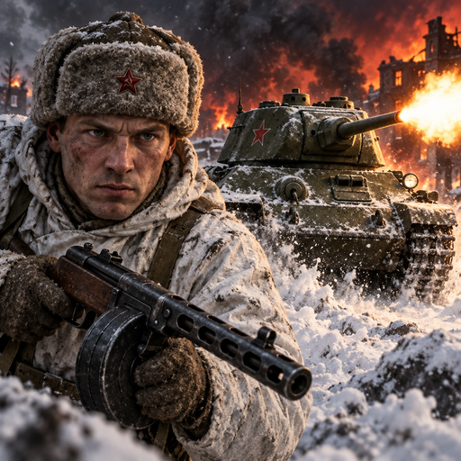
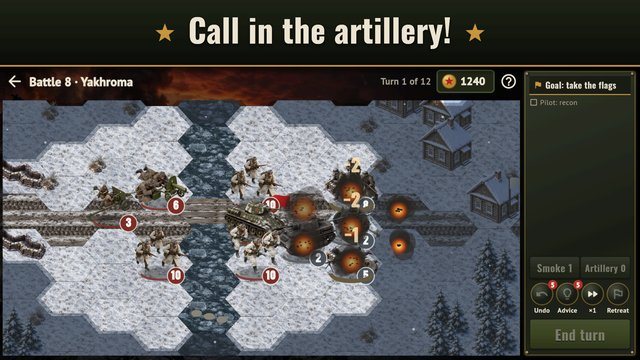

Steel Front
October 1941. The enemy is at the gates of Moscow, and whether the front holds depends on your orders.
Steel Front is a turn-based Second World War strategy game: tanks, artillery, trenches and the fog of war. Choose on the front map which region to win back next. Gather your units at HQ, then lead them across the hexes: dig your riflemen in, pin the enemy down with a machine gun, hit a tank in the flank and call in an artillery strike. Your soldiers go from battle to battle and become veterans.

- The Soviet campaign: five chapters from the Battle of Moscow through Stalingrad, Kursk and Bagration to the storming of the Reichstag, with front-line briefings about real events.
- The American and British campaigns: from North Africa, Sicily, Normandy and the Ardennes to the Rhine; from Dunkirk and El Alamein to Normandy and Holland. Every army has its own equipment and strengths.
- Special historic battles: Pavlov's House, Prokhorovka, the Reichstag, Omaha Beach, Bastogne, Pegasus Bridge, Arnhem Bridge and more.
- Support in battle: artillery and the Katyusha, smoke, Not a step back, P-47 strafing runs, reinforcements, flares at night and commando landings.
- Hex tactics: terrain and trenches, sappers against mines, wire and bunkers, return fire, Overwatch, morale, a loss forecast before every attack.
- A fair fog of war: the AI sees only what its soldiers see; battles in winter and summer, spring and autumn, in snow, rain, fog and at night; three difficulty levels.
- HQ between battles: units keep their losses and honours, veterans earn ranks, AP rounds, grenades and radios for your units, and you know their leaders by name.
- A commander with a skill tree, medals and a weapons handbook with the story of every vehicle and gun.
- Realistic art seen from 45 degrees, recorded gunfire and explosions, orchestral music.
- Autosave mid-battle, a daily operation and daily tasks; plays offline, in English and Russian.
No blood and no Nazi symbols: just the history of the front. An optional reminder after a week away, off at any time in the settings. The front is waiting, commander!